AI Engine DevelopmentSee Vitis™ Development Environment on xilinx.com See Vitis™ AI Development Environment on xilinx.com |
In this lab, we will show how to export an AI Engine design into a Vitis AI Engine component after it has been simulated and validated in Vitis Model Composer.
In the early stages of the development cycle, it is critical to verify the functional behavior of the AI Engine kernels and graph. Vitis Model Composer is an ideal choice for testing and debugging at this level because of the speed of iteration and the high level of data visibility it provides the AI Engine developer.
To run on Versal hardware, the finished AI Engine design must be linked to data movers running on the PL and a host application running on the PS. This linking step, as well as the subsequent packaging of the finished hardware image, can be accomplished via a Vitis system project.
AI Engine designs can be brought into Vitis in two different ways:
AI Engine Component: Import the AI Engine kernel code, graph code, and data sources into the Vitis workspace. Use this approach when you expect to make changes to the AI Engine code after exporting from Vitis Model Composer.
Pre-built Binary: Import a compiled AI Engine
graph (libadf.a) into a binary container. Use this approach
when the design has been fully completed and validated in Vitis Model
Composer.
This lab will demonstrate both approaches.
The design that will be used is shown in the following figure:

The AI Engine part of the design, consisting of the Interpolator, Polarclip, and Classifier kernels, is simulated by and generated from Vitis Model Composer.
We will show how to export the AI Engine design to Vitis so it can be combined with the PL data movers and PS host application.
Open and run the Vitis Model Composer testbench for the AI Engine part of the design.
In MATLAB:
open_system('aie_testbench');
sim('aie_testbench');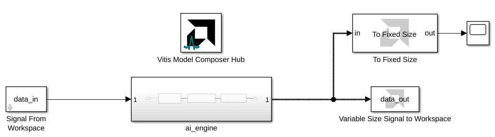
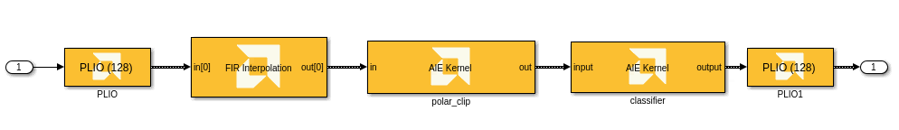
This model implements the AI Engine processing cascade using a FIR Interpolation block from the Vitis DSP Library and AIE Kernel blocks pointing to existing kernel source code. The output of simulating the AI Engine processing cascade is compared to a reference output. The AI Engine output is also displayed on a scope.
NOTE: To see how the input and reference output data are loaded into Vitis Model Composer, go to the Simulink toolstrip -> Modeling -> Model Settings -> Model Properties -> Callbacks -> PostLoadFcn.
After simulating the processing chain and verifying its functionality, the AI Engine design can be exported to Vitis for integration into a larger project.
Vitis Model Composer will generate AI Engine graph code from the design.
In the aie_testbench model, double-click on the
Vitis Model Composer Hub block.
Ensure that the Hub block is configured as follows for the
ai_engine subsystem.
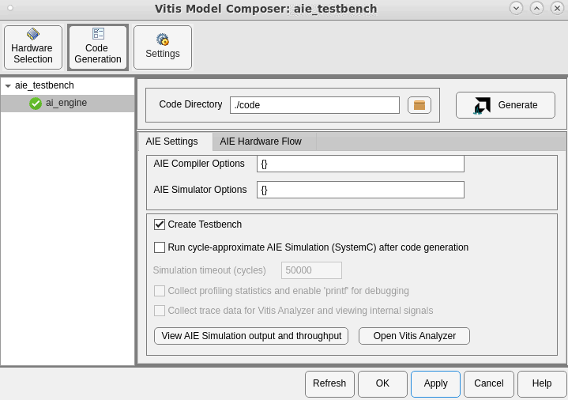
The Create Testbench option generates input and reference output data files for the Vitis AIE Simulator, in addition to the graph code.
Wait for code generation to complete.
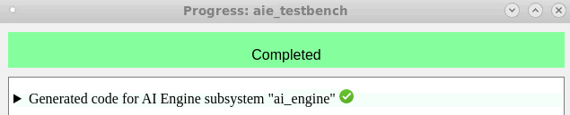
After code generation is complete, explore the contents of the
generated code folder:
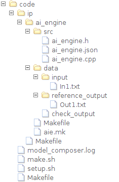
The generated code folder contains a folder called ip
that contains subfolders for each AI Engine and HLS IP in the design.
Each individual IP subfolder contains a src folder
containing the IP's source code. In this design, the
ip/ai_engine/src folder contains the AI Engine code we will
bring into Vitis as a component. The ip/ai_engine/data
folder contains input and reference output data files that can be used
in AI Engine simulation and hardware validation. Vitis Model Composer
also generates Makefiles for compiling and simulating the AI Engine
design outside of Model Composer.
Next, we will create a new Vitis workspace and add an AI Engine component to it.
Open a Linux terminal in this lab directory.
Configure your shell to run Vitis:
source (path to Xilinx installation)/Vitis/2023.2/settings64.sh.
Start the Vitis IDE: vitis -w work &.
This creates a new folder called work in the current
folder and opens it as a Vitis workspace. The Vitis Unified IDE
opens to the Welcome page.
work folder as the current workspace. The workspace is
currently empty. Select Create AI Engine
Component.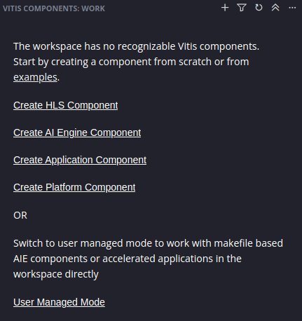
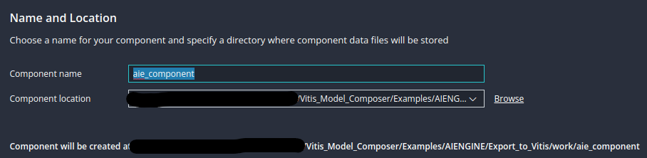
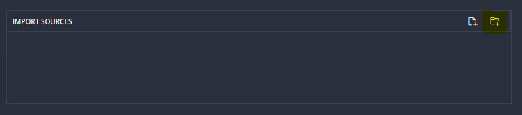
Add the src folder from the AI Engine IP that you
generated from Vitis Model Composer.
Repeat the previous step to add the data folder from
the generated AI Engine IP.
The AI Engine Component must have a top-level file that instantiates
and runs the AI Engine graph. Vitis Model Composer generates this file
for you as (subsystem name).cpp in the src
folder.
src/ai_engine.cpp.
Click Next.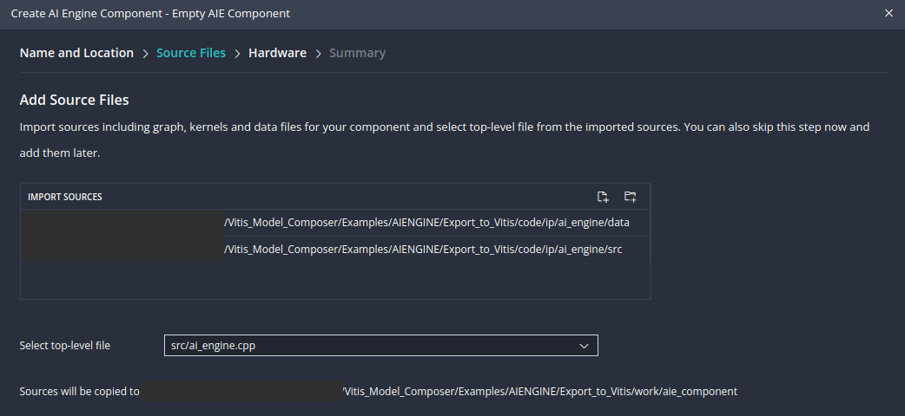
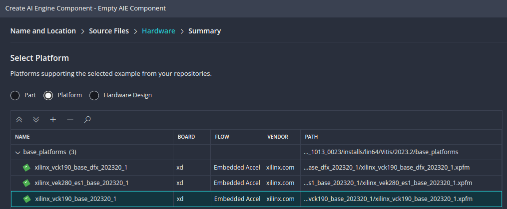
NOTE: For information on custom platform creation, see Vitis Platform Creation labs.
The AI Engine Component is created in the Vitis workspace.
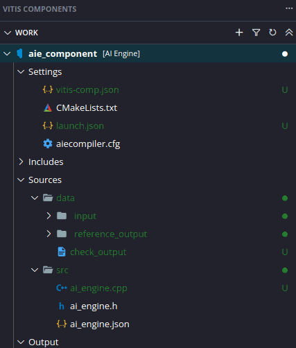
NOTE: If you make changes to the AI Engine design in Vitis Model Composer and re-generate code, update the Vitis component by copying the
dataandsrcfolders into the component's folder in the Vitis workspace.
Our AI Engine design in Vitis Model Composer was implemented using custom kernel code and blocks from the Model Composer AI Engine DSP Library. Before building the AI Engine component, it is necessary to add the kernel code's location to the component's include path.
Double-click the file aiecompiler.cfg in the AI
Engine Component.
Under Include Directory, click Add Item.
Add this lab's folder (07-Export_to_Vitis) to the
include path.
Because our AI Engine design contains blocks from the Vitis Model Composer AI Engine DSP library, we must also add the following locations to the include path:
./xmc_aie_lib(Model Composer install location)/tps/xf_dsp/L1/src/aie(Model Composer install location)/tps/xf_dsp/L1/include/aie(Model Composer install location)/tps/xf_dsp/L2/include/aieNOTE: The Model Composer install location can be found by typing
xmcPathInfoin the MATLAB Command Window.
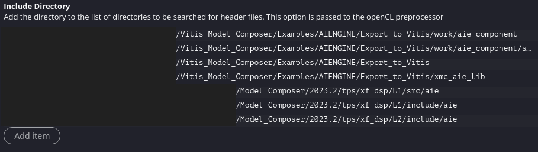
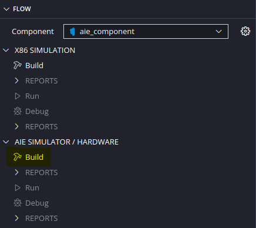
After the build completes, confirm that
Build Finished successfully appears in the Output console.
The build outputs, including the libadf.a, are visible in
the component workspace.
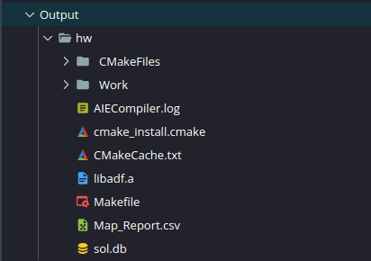
You can now continue working with this component in Vitis, including simulation, debugging, and integrating with other components to build a system project.
In addition to generating AI Engine graph code, Vitis Model Composer
can also compile the code into a binary (libadf.a) by
invoking the aiecompiler.
In the aie_testbench model, double-click on the
Vitis Model Composer Hub block.
Click on the Hardware Selection tab.
Use the Device Chooser to select a platform file to use for the design. The example below uses the VCK190 base platform.
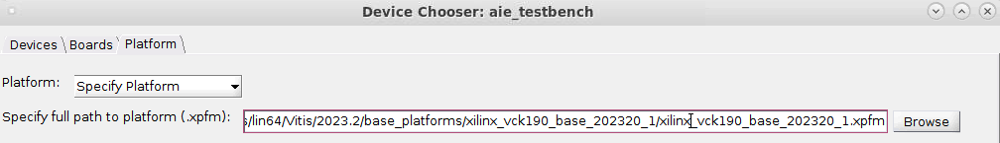
Return to the Code Generation tab.
Ensure that the Hub block is configured as follows for the
ai_engine subsystem.
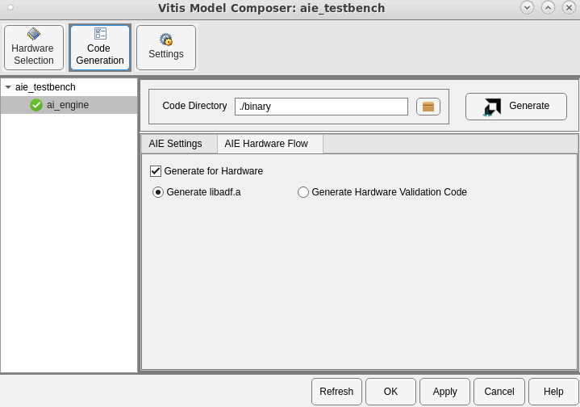
Wait for code generation to complete.
After code generation is complete, a report shows what was generated and where it is located:
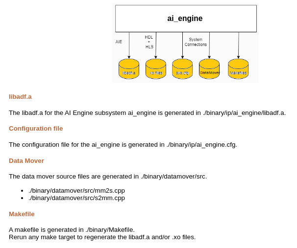
In this lab, we will show how to bring the compiled AI Engine graph
(libadf.a) into a Vitis system project.
First, create an example Vitis system project to use with the rest of this lab.
In Vitis, go to the File menu -> New Component -> System Project.
Leave the project name and location as their defaults. Click Next.
Select a platform, e.g. VCK190. Click Next.
Specify the Embedded Component Paths for this system project, then click Next.
Leave the 3 fields (Kernel Image, Root FS, Sysroot) blank to build the system project for a baremetal flow.
Optionally, you can specify the paths to these components to build the system project for Linux. An example is below:
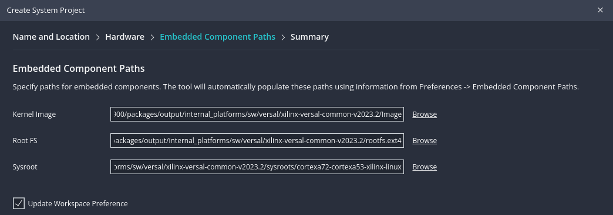
The Vitis system project is created in the workspace, and the system project settings open.
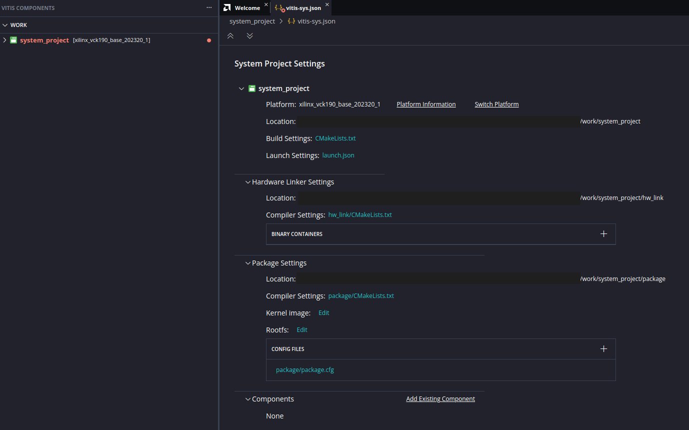
Create a binary container in the system project and add the
libadf.a generated by Vitis Model Composer to it.
Click the plus sign (+) next to Binary Containers.
Click OK to create a new binary container.
Next to binary_container_1, click on Add
Pre-Built Binary. Select AIE Archive.
Navigate to the libadf.a created from Vitis Model
Composer in the previous section. Click Open.
The compiled AI Engine graph is now in the Vitis system project's binary container.
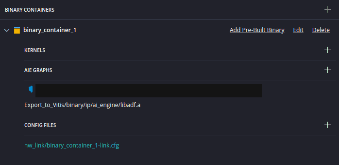
Now that the AI Engine design has been brought from Vitis Model Composer into Vitis, it can be combined with other PL components (HLS components, data movers, etc.) and a host application to build a complete Versal system design.
To learn more about how to use a Vitis system project, see the AI Engine/Versal Integration tutorial.
Congratulations! This concludes Lab 7 and the AI Engine tutorial series.
In this lab, we showed two methods (AI Engine Component and pre-built binary) to export an AI Engine design from Vitis Model Composer to a Vitis system project.
© Copyright 2023 Advanced Micro Devices, Inc.
Licensed under the Apache License, Version 2.0 (the "License"); you may not use this file except in compliance with the License. You may obtain a copy of the License at
http://www.apache.org/licenses/LICENSE-2.0Unless required by applicable law or agreed to in writing, software distributed under the License is distributed on an "AS IS" BASIS, WITHOUT WARRANTIES OR CONDITIONS OF ANY KIND, either express or implied. See the License for the specific language governing permissions and limitations under the License.
XD058 | © Copyright 2023 Advanced Micro Devices, Inc.